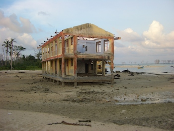

- Title Page
- Introduction
- The Islands and the Anthropologist
- Tsunami and First Response
- Wading In
- Second Tsunami
- In Search of Axes
- Steering a Sustainable Course
- Steering Committee
- Exchange Visit
- Nirnay Means Decision
- Up and Running
- Caritas Leans In
- Singh Sounds a Warning
- Midcourse Correction
- The SOPHIA Experiment
- Taking Stock
- SOPHIA Reports
Wading In
In early January 2005, Singh returned to the Institute of Social Ecology in Vienna from India to talk to Fischer-Kowalski, his mentor, about the logistics of spending an extended period of time in the Nicobars (e.g., who would assume his teaching responsibilities?). He had decided to return to the islands to help in any way he could. He felt it was his moral duty. Fischer-Kowalski was initially reluctant to let Singh go, citing the dangerous conditions and his lack of experience in relief work.
She also had professional concerns. A sociologist by training, Fischer-Kowalski had founded the Institute of Social Ecology and served as its director for 18 years. The institute drew researchers from a wide range of academic disciplines, and while it took an unusually hands-on and problem solving approach to issues of social and ecological change, it also prided itself on its reputation for scientific rigor. Would direct engagement in the tsunami recovery efforts compromise the institute’s objectivity? Would it constitute interference? These questions gave her pause.

© Simron Singh
Tsunami damage
But events moved quickly and Fischer-Kowalski soon made up her mind. The press had identified Singh as the world’s leading Nicobars expert and the only person in Austria to have regular access to the islands. The institute was suddenly in the limelight. Requests for interviews and offers of donations came pouring in, and it was becoming clear that the social ecology of the islands was being radically transformed in fascinating ways. Moreover, Fischer-Kowalski had had a direct request from the Nicobar Tribal Council for Singh to come advise them. In her view, the tsunami was an extraordinary event that required an exceptional response. [11] The principle of scientific detachment had been trumped by a duty to help the islanders and document the ecological transition.

Prof. Marina Fischer-Kowalski
Other academic institutions evidently felt the same way. Offers of financial support flooded in from the British Museum, Yale University, a Boston anthropologist interested in “urgent anthropology,” and the institute’s own academic sponsor, Klagenfurt University, among others. Before long, the Institute had pledges of assistance totaling about €40,000 in hand.
Then, in mid-January, the institute got a call from Universal Music, a major international production company that had just finished recording a CD called “Austria for Asia” to raise money for the Nicobar and Andaman Islands. The CD was the brainchild of André Heller, a popular Austrian pop singer and performance artist, who had gathered more than 60 musicians from across the music spectrum for the fundraiser. The CD was expected to bring in about €200,000 in private donations. Would the institute be interested in managing that money?
Yes, Fischer-Kowalski said, but the institute would need help turning the funds to useful work. The word went out and spread quickly. The tele-fundraiser Nachbar in Not (Neighbor in Need) offered help with CD sales and donor relations, and Caritas Austria, the Catholic relief agency, came forward to help with project management and financial matters. Caritas also had €150,000 of donations toward tsunami aid to bring to the table. Before long, the institute had pledges nearing €400,000.
Fischer-Kowalski was impressed. This looked like an unusual opportunity, both for the Nicobarese and for the institute. She began negotiations to create some sort of special-purpose NGO that could deliver compassionate, science-based help to the Nicobars. At the same time, she applied to the Austrian Science Fund for a grant to support new research in the Nicobars. Fischer-Kowalski had in mind a new kind of integrated recovery collaboration in which ongoing scientific research would guide humanitarian interventions. Though the incipient partnership did not yet have a name or a mission, it was positioned to make a difference.
[11] Material citing Fischer-Kowalski in this section comes from Kirsten Lundberg’s interview with Marina Fischer-Kowalski on February 25, 2014, in Vienna.